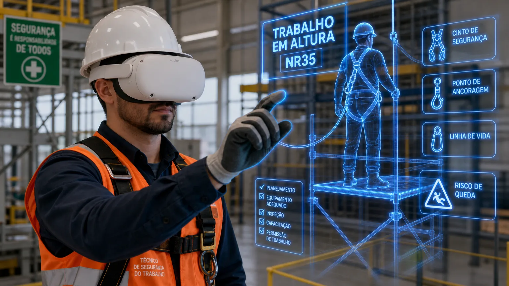
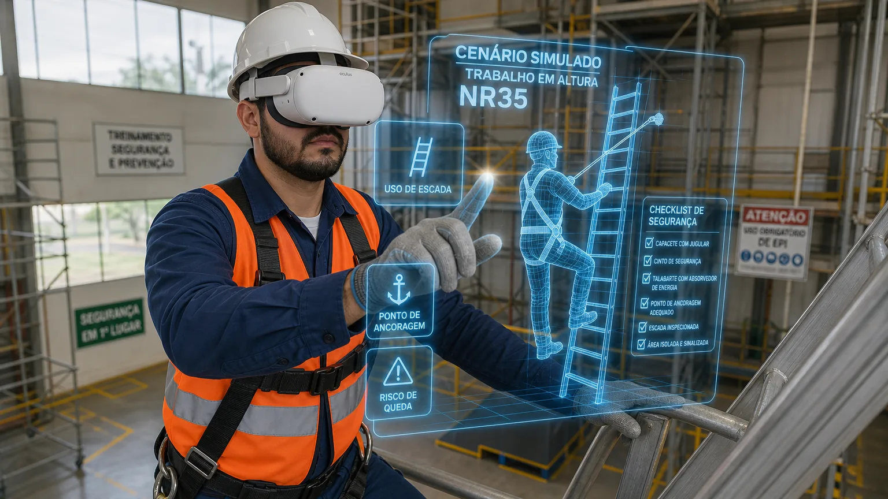

Transformamos situações reais de risco em experiências imersivas de treinamento. Com tecnologia de realidade aumentada, seus colaboradores podem aprender a identificar perigos, tomar decisões e agir corretamente antes que uma situação de emergência aconteça.

Treinamentos tradicionais muitas vezes apresentam as situações de risco apenas de forma teórica. Com a realidade aumentada, o trabalhador pode visualizar situações, reconhecer perigos e tomar decisões dentro de uma experiência simulada, tornando o aprendizado mais envolvente e próximo da realidade operacional.
Cenários que aproximam o treinamento da realidade vivida na operação.
Identificação de perigos antes que eles se transformem em acidentes.
O colaborador aprende tomando decisões diante de situações simuladas.
O colaborador utiliza os óculos de realidade aumentada e entra em um ambiente de treinamento tecnológico.
O sistema apresenta situações relacionadas aos riscos existentes na operação da empresa.
O trabalhador precisa reconhecer perigos, escolher comportamentos seguros e reagir às situações apresentadas.
O aprendizado é levado para a rotina de trabalho, aumentando a percepção de riscos e fortalecendo a cultura de segurança.
Determinadas situações são perigosas ou inviáveis de serem reproduzidas fisicamente durante um treinamento. A realidade aumentada permite criar experiências controladas nas quais o colaborador pode vivenciar virtualmente situações de risco sem estar fisicamente exposto ao perigo real.
A tecnologia não substitui os procedimentos de SST, mas pode ser uma poderosa ferramenta para reforçar a percepção de riscos e preparar pessoas para agir corretamente.
Ensinar o trabalhador a reconhecer condições inseguras antes de iniciar uma atividade.
Simular situações nas quais o colaborador precisa escolher a conduta mais segura.
Aumentar a capacidade de observar detalhes que poderiam passar despercebidos na rotina.
Criar cenários simulados para preparar os colaboradores para agir de maneira mais rápida e organizada.
Transformar conceitos teóricos em experiências práticas e memoráveis.
Levar a segurança para além de normas e procedimentos, tornando-a parte do comportamento diário.
Utilizamos recursos de realidade aumentada para transformar treinamentos convencionais em experiências interativas e imersivas. A tecnologia permite aproximar o colaborador de situações que fazem parte da realidade operacional da empresa, tornando o treinamento mais relevante, visual e envolvente.
O objetivo não é prometer a eliminação de acidentes, e sim reduzir a exposição ao risco durante o aprendizado e ampliar a percepção, o preparo e a prevenção.
Podem ser desenvolvidos projetos personalizados, considerando os processos, ambientes, atividades e principais riscos existentes na empresa.
Cada empresa possui uma realidade diferente. Uma indústria possui riscos diferentes de um centro logístico. Uma obra possui desafios diferentes de um hospital. Por isso, um treinamento realmente eficiente precisa conversar com o ambiente onde o trabalhador está inserido.
Podemos transformar situações da sua própria operação em experiências de treinamento, criando uma preparação muito mais próxima da realidade dos seus colaboradores.

Prepare seus colaboradores para reconhecer e responder aos riscos.
Simule situações perigosas sem reproduzir fisicamente o risco real.
Experiências imersivas podem aumentar o envolvimento dos participantes.
Desenvolva experiências alinhadas aos riscos e processos da sua empresa.
Aplique cenários de treinamento de maneira estruturada para diferentes equipes.
Transforme segurança em experiência, percepção e comportamento.
Investir em treinamento não significa apenas cumprir uma obrigação. Significa preparar pessoas para reconhecer perigos, tomar decisões melhores e voltar para casa em segurança.
A realidade aumentada permite que empresas avancem para uma nova geração de treinamentos: mais tecnológicos, mais imersivos, mais personalizados e cada vez mais conectados à realidade operacional.